WELCOME PAGE
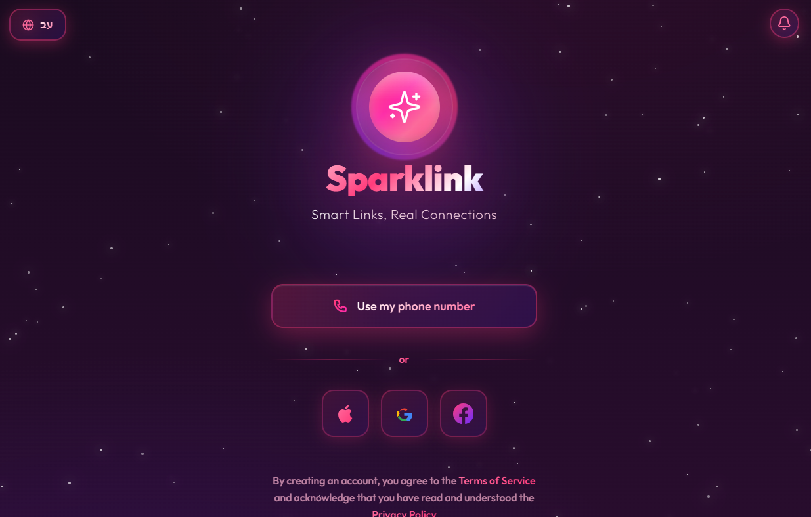
Notes / Requirements:
- Support authentication via Google / Apple / Facebook.
- If the user chooses to register, redirect to a dedicated signup page that includes email and phone number, so we can properly send notifications.
- Support Hebrew and English across all screens.
- Require acceptance of Terms of Use during signup.
- Request location permission (GPS) to enable distance-based matching.
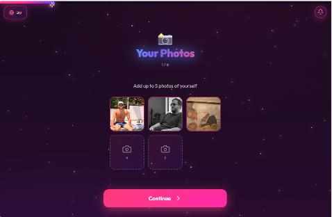
PROFILE PAGE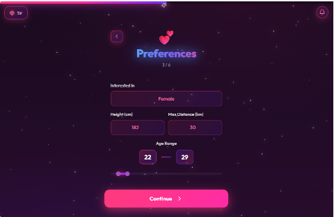
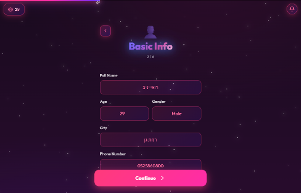
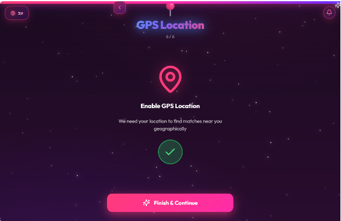
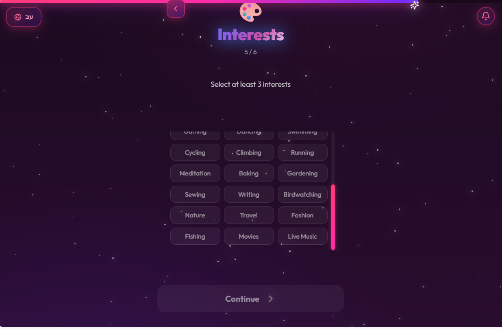
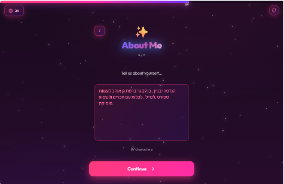
הערות:
Notes / Requirements:
- Allow users to upload up to 5 photos.
- Use GPS location to enable distance-based matching.
- GPS support already exists via the browser:
- User location is stored in UserProfile.
- No paid APIs are used.
- Distance-based matching logic has not been implemented yet.
- Make the signup flow more fun and engaging:
- Step-based tiles/cards
- Colorful progress bar
- Light, playful UX feeling
- When uploading a photo, it does not properly fit inside its image tile/card and needs to be fixed.
QUESTIONNAIRESELECT PAGE
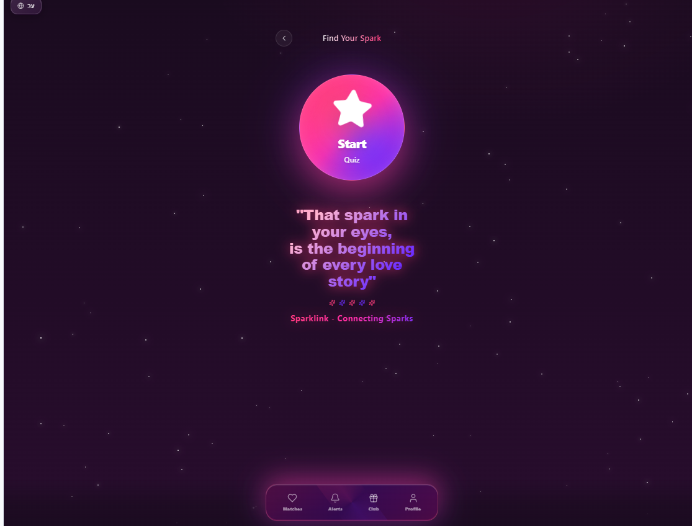
Notes / Requirement:
- The large circle should be a clickable button that navigates the user to the questionnaire.
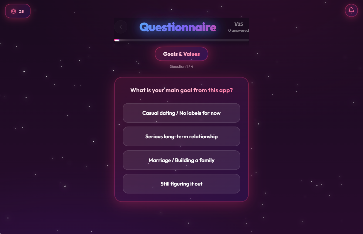
QUIZ PAGE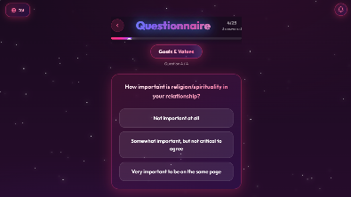
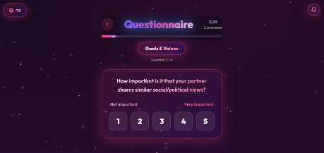
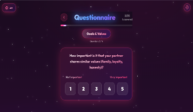
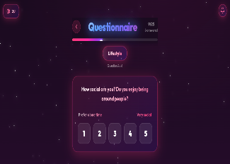
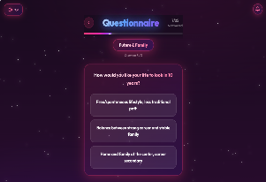
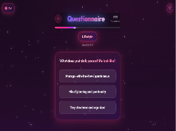
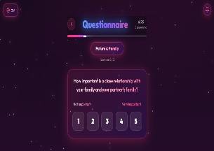
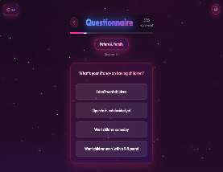
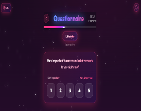
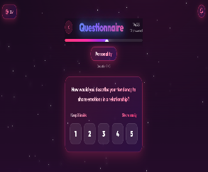
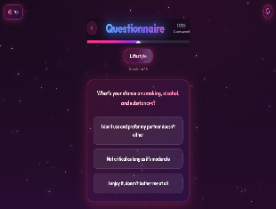
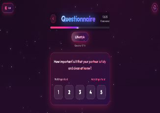
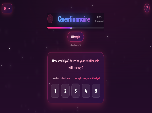
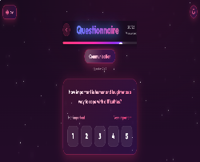
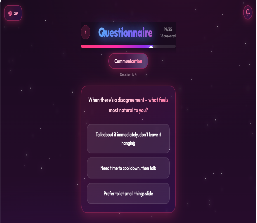
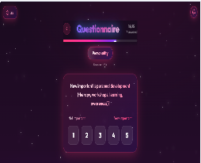
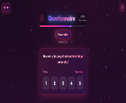
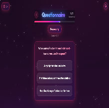
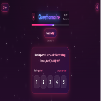
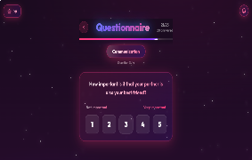
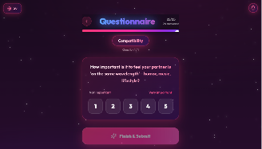
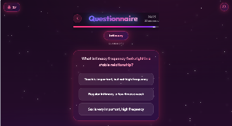
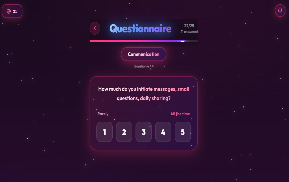
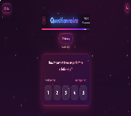
Notes / Requirements:
- The matching algorithm should be based on topics/categories assigned to each group of questions.
- The algorithm should also consider the gender preferences selected by users.
- The algorithm should take into account GPS location, when users mark location as important.
- If a user does not share GPS location, use city-based location and a distance (km) preference defined by the user.
- Implement a dynamic, step-based questionnaire:
- Rotating questions
- Light and fun UX
- Colorful progress bar indicating completion
MATCHES PAGE
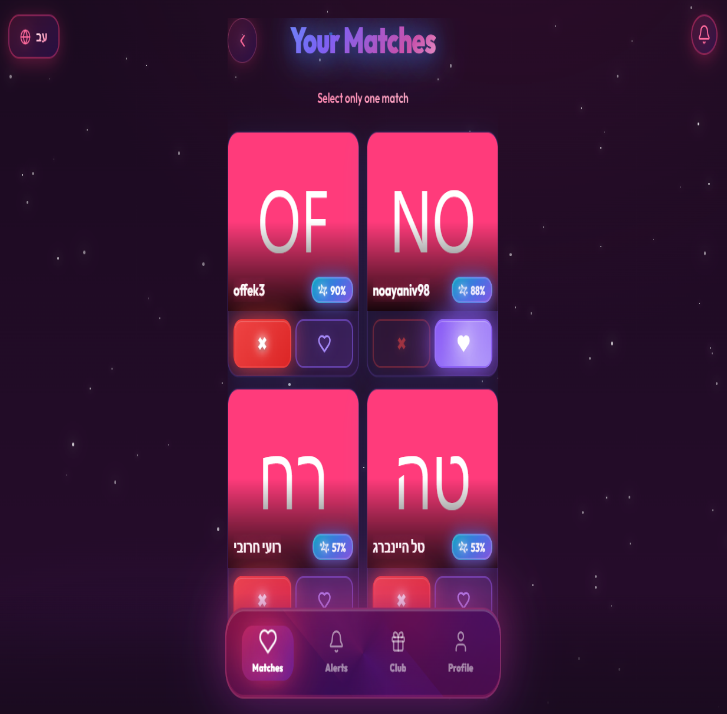
Notes / Requirements:
- SPARK MODE – The state when two users match is not fully defined yet and needs to be specified/implemented.
- Send an SMS notification when another user likes me.
- Send an SMS notification when a match occurs.
- Once both users like each other, the action button should change to SPARK, and the top modal/popup should open.
- Fix the small logo alignment so it is visually aligned with the accompanying text.
- When I press on user's photo , I move to MATCH PROFILE PAGE
- IF USER LIKE ME I SEE IT ON HIS PICTUER IN THE RUGHT TOP CORNER
- WHEN SPARK MODE IS START IM CLOSE 1 ON 1 WITH THE OTHER USER . NO ONE CAN LIKE ME AND ME EITHER.
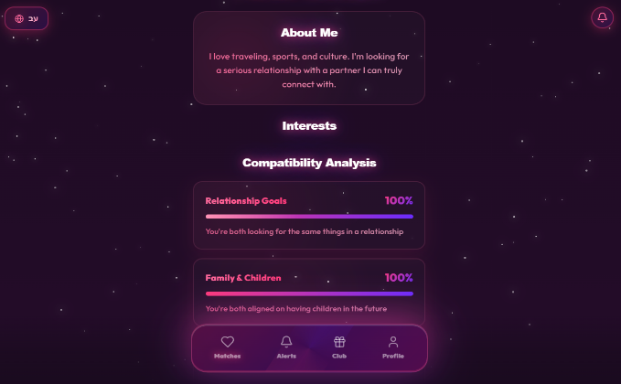
MATCH PROFILE PAGE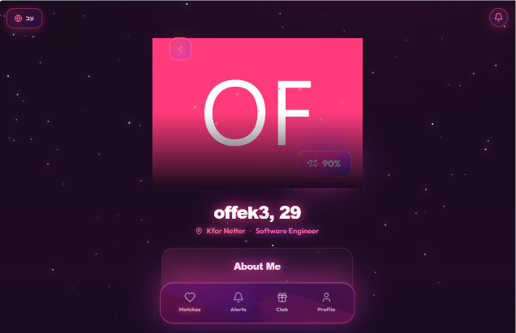
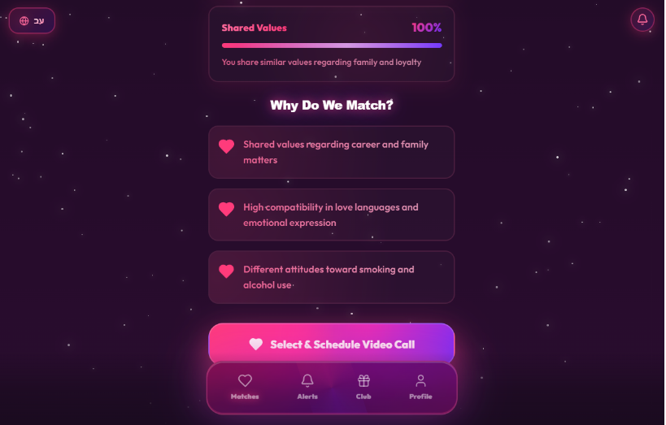
Notes / Requirements:
- The displayed information should be based on algorithm results and the data the user provides about themselves.
- Add the ability to browse through up to 5 user photos using arrow-style navigation buttons.
- When clicking on a user’s photo, open a large image modal, with the ability to navigate between the photos inside the modal as well.
VIDEO SHEDUAL PAGE
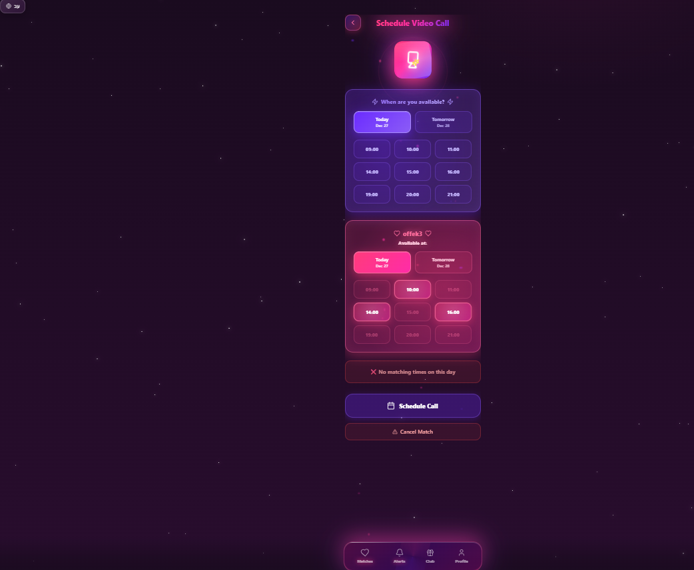
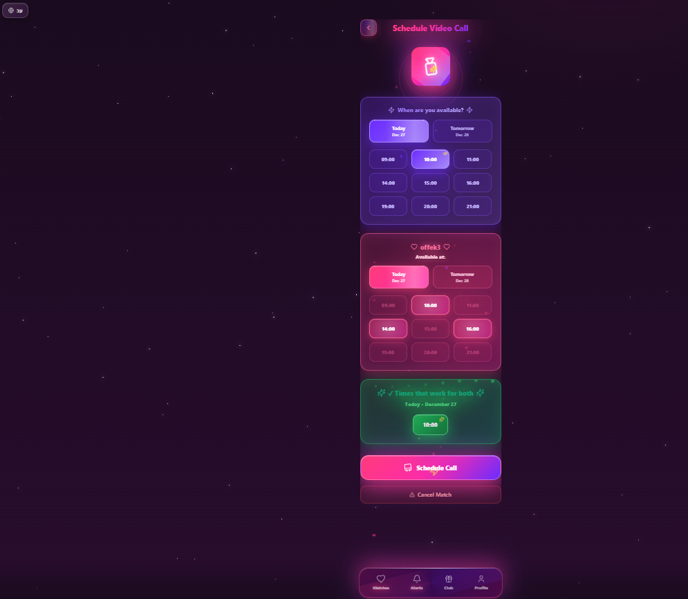
Notes / Requirements:
- Users should be able to see the days and time slots that the other user marked as available, so they can adjust their own availability.
If needed, users can open additional time slots at the bottom of the screen.
Once both users provide availability, the system should suggest the earliest possible meeting date and time for both sides. - Users should receive notifications:
- When a date and time are scheduled
- And reminders to enter and schedule if they have not done so yet.
- Users have 48 hours to set a meeting date and time.
If they do not, they should receive a notification every 4 hours until scheduling is completed. - The video call must take place inside the app.
Currently, the link automatically redirects users to an external Zoom call, which should be replaced with an in-app video call experience.
GAP REPORT PAGE
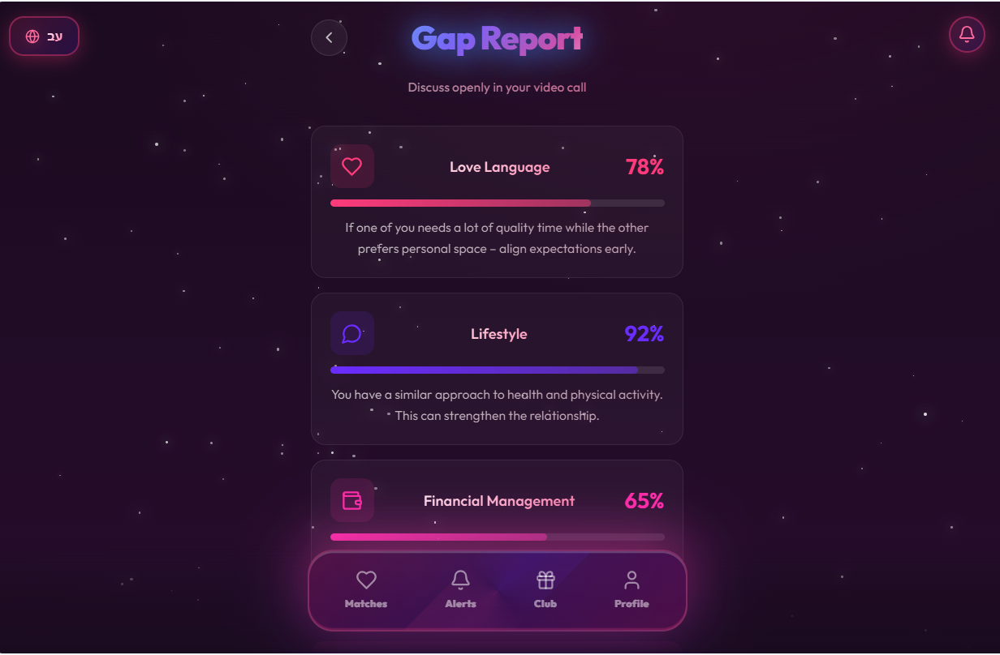
Notes / Requirements:
- Before each meeting, the algorithm should generate a gap report, highlighting areas of differences between the two users, so they can discuss these topics during their conversation.
VIDEO CALL PAGE
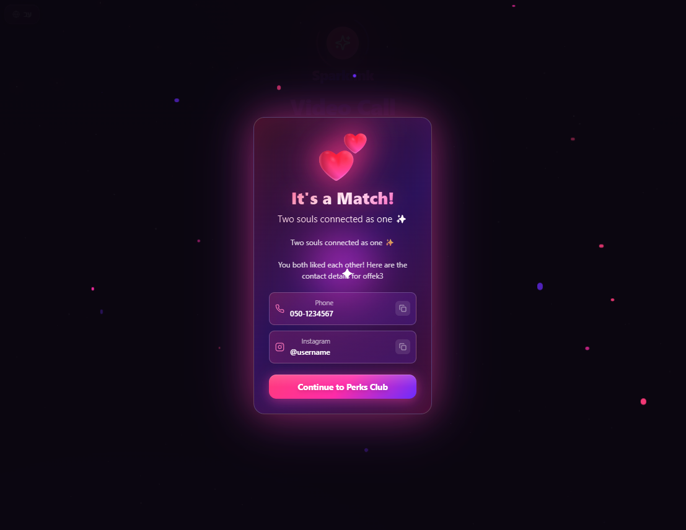
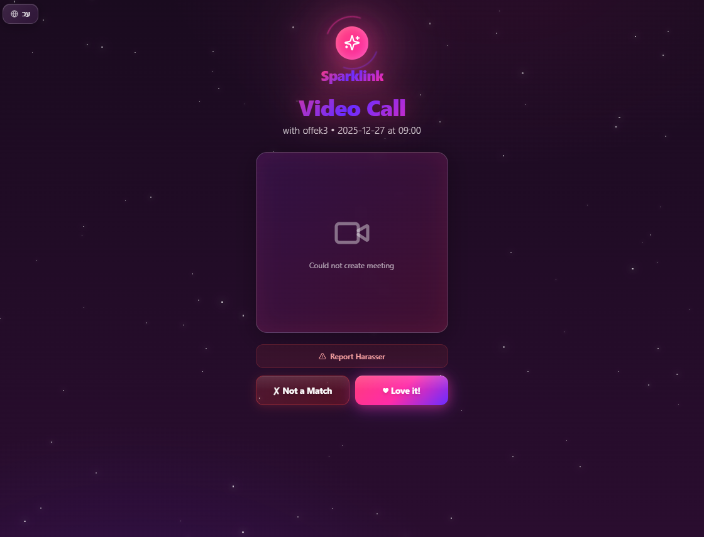
Notes / Requirements:
- Add an option to report a harassing user.
- If a user is reported:
- The video call recording should be sent to the admin for review.
- The reported user should receive an automatic 24-hour suspension until the case is reviewed.
- This behavior must be clearly defined and covered in the app’s Terms & Policies.
- Send a pre-call notification/reminder to users before a scheduled video call starts, so they don’t forget.
TOOLBAR
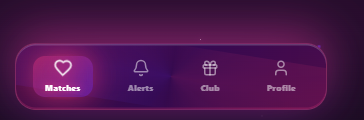
Notes / Requirements:
- MATCHES – Navigates to the Matches screen.
- ALERTS – Navigates to the Notifications screen.
- CLUB – Navigates to the app’s Club section, which will be launched at a later stage.
- PROFILE – Navigates to the user’s personal profile screen.
NOTIFICTIONS
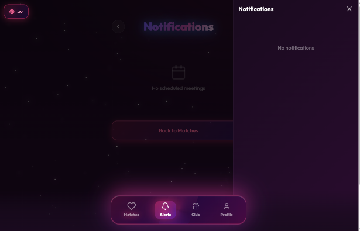
Notes / Requirements:
- SMS Notifications – Current Status (Brief)
- An SMS sending function (sendSMS) already exists and is integrated with Twilio.
- All required connections and secrets are already configured.
- Because the Twilio account is in Trial mode, regular SMS cannot be sent without payment.
- For testing purposes only, SMS delivery can be validated without payment using Twilio Verify (OTP).
- This test is intended only to confirm that the system can successfully send SMS, without upgrading or paying.
- Send an SMS reminder every 4 hours if a user has not scheduled a meeting date and time.
- Send an SMS notification when a meeting date/time is changed, canceled, and when the user is returned to the matches screen.
- Synchronize match-related notifications so users receive updates both inside and outside the app for all states:
- Like
- Match
- Unmatch
- Spark Mode
- Video call date/time proposal
This ensures users are always informed of their current status, whether they are actively using the app or not.
MY PROFILE PAGE
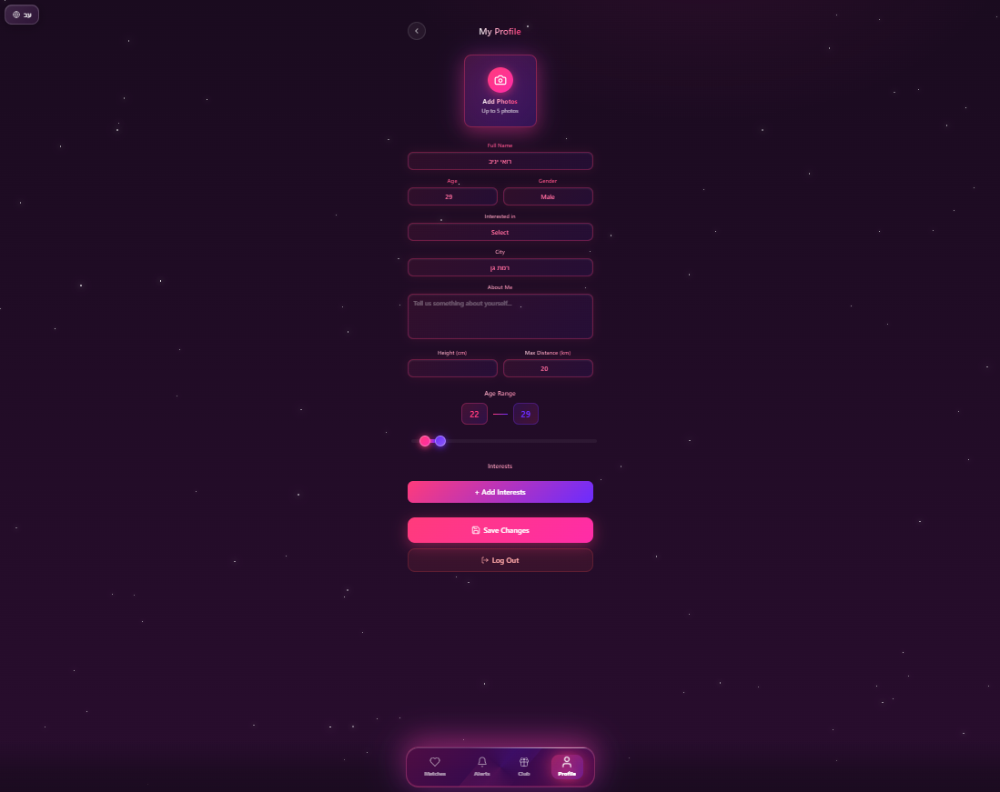
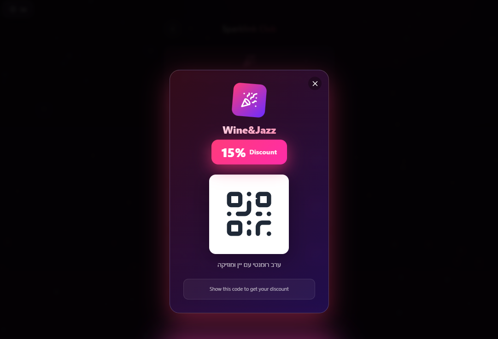
SPARKLINK CLUB PAGE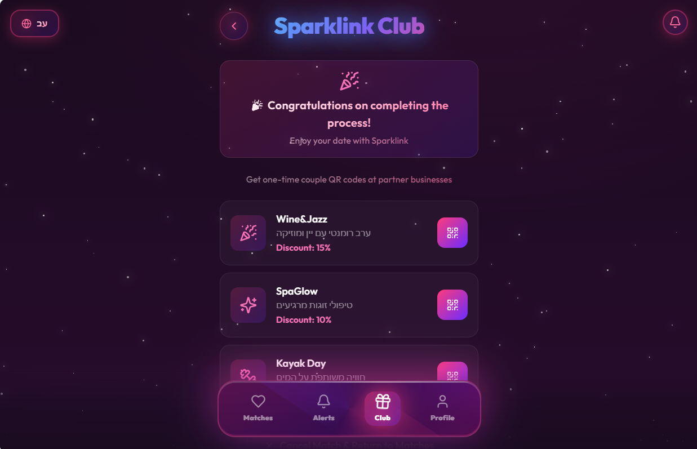
Notes / Requirement:
- This feature should not be enabled in the first phase and will be activated only after reaching a large number of users.